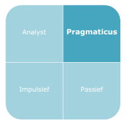
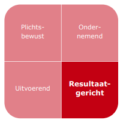
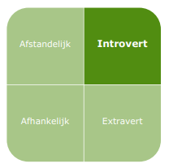
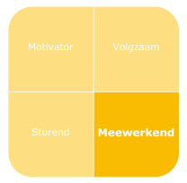
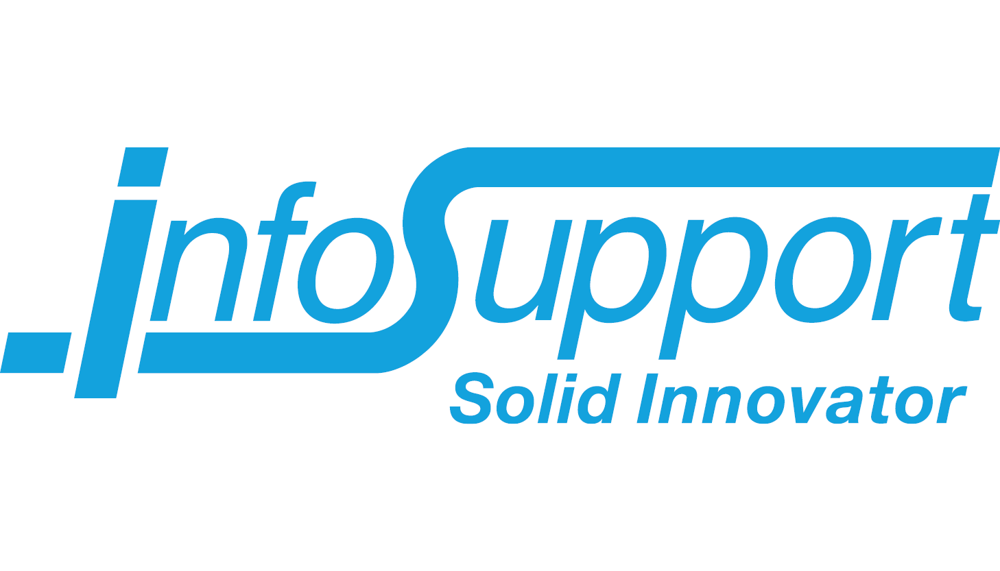
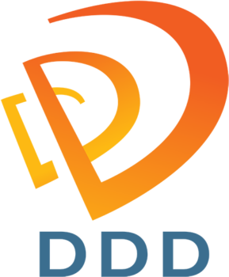
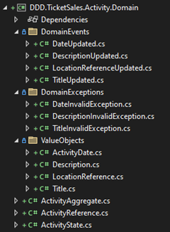
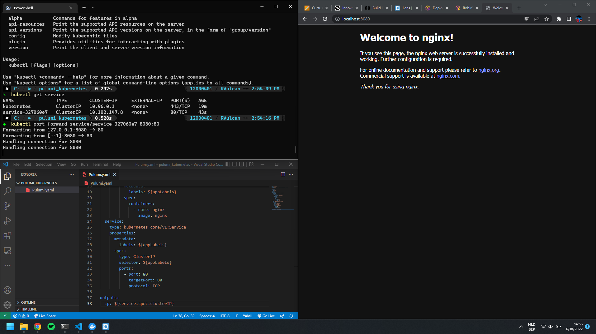
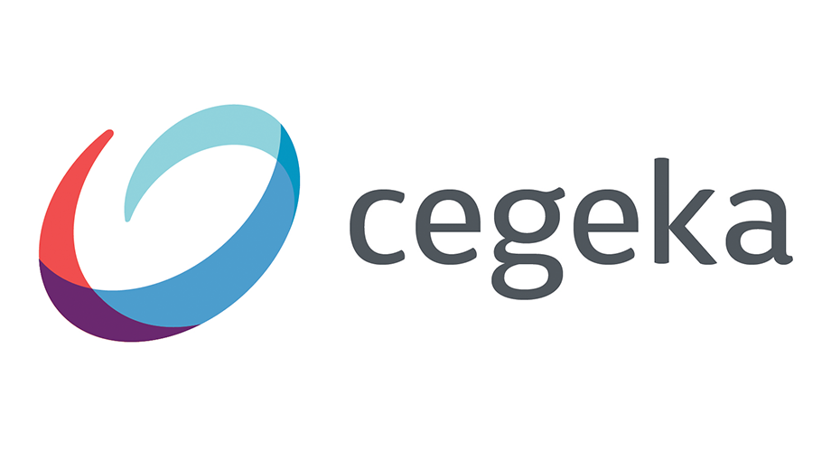

Mijn naam is Robin Vantilt en ik ben 20 jaar. Ik ben in het middelbaar elektromechanica afgestudeerd en ben PB Toegepaste Informatica gaan volgen aan de Hogeschool PXL omdat ik mij altijd afvroeg hoe de software die we dagdagelijks gebruiken in mekaar zit.
Als full-stack ontwikkelaar werk ik het liefst aan de backend, ik hou van het coderen van logica in een applicatie. Naast mijn programmeervaardigheden heb ik doorheen mijn opleiding ook veel soft skills verbeterd en vind ik het fijn om in een team te werken. Één van mijn meest opmerkelijke eigenschappen is mijn doorzettingsvermogen, ik geef zelden op wanneer ik een moeilijk probleem ben aan het oplossen (bv. een fout in code).
Na mijn opleiding wil ik direct voor een groot bedrijf gaan werken waar ik veel ervaring kan opdoen en veel kan bijleren. Ik streef naar een expert in mijn vak te worden.




Activiteiten
Persoonlijke Ontwikkeling
Seminarie
InnovatieRoute DDD & IaC
Hackathon
2022
14-18 Feb
Projectweek
Meerdere activiteiten met eigen research project team. Elkaar leren kennen en zorgen dat onderling communiceren makkelijker verloopt. POP-sessie Learning Path (feedback), reflectieverslag uitwerken, seminarie & workshop over netwerken op de een jobbeurs, jobevent zelf en het begin van het research project.
8 Mar
POP-sessie “Brein aan het werk” & “POPping”
Sessie met research project teams over afleiding (specifiek door digitale apparaten) en hoe dit op een dagplan te zien is.
Sessie met research project teams over inzicht van eigen vaardigheden, geven en ontvangen van feedback, opstellen van ontwikkelingsplan en focussen op zelfkennis en zelfwaardering.
15 Mar
Cegeka: The Challenge of Open Source
Hoe en waarom open source code werkt en wat daar allemaal mee aan de pas komt. Licenties, contributies en nog meer.
22 Mar
Solita: Layered API's
Hedendaagse uitdagingen van het ontwerpen van een goed gestructureerde API. Beveiliging, verschillende lagen van een API en hoe het werkt in een bedrijfstoepassing.
19 Apr
Easi: API-first web development using Laravel and Vue.JS
“Api first development” t.o.v. MVC werkwijze en toelichting over gebruikte tools. Een API meer zien als een eigen entiteit i.p.v. integraties binnen andere systemen.
10 mei
VMWare: Full stack Development
Hoe krijgen bedrijven hun software in productie, waar een waarom maken ze gebruik van VMWare producten (VMware Tanzu). Provisioning van hardware, VMs, containers, load balancing en nog meer.
6 oct
ACA Group Infrastructure as Code
Theorie: voor- en nadelen van IaC, alternatieven, DevOps, GItOps, Terraform, AWS. Praktijk: Use case om zelf IaC te schrijven in Terraform.
12 oct
POP-sessie “My Team and I” (IT-Project)
Sessie met IT-Project team over samenwerking.
13 oct
Infosupport Domain Driven Design 1
Belangrijkste DDD concepten verkennen, brainstormen over de logica van een gegeven realistische use-case en eindigen met een volledig uitgewerkt domein van de case.
20 oct
Infosupport Domain Driven Design 2
De gegeven use-case van de eerste sessie uitwerken op een DDD manier.
9 nov
iO Belgium: Automated Testing and Quality Assurance
Ontdekken en toepassen van automated testing tools op een Laravel project.
23 nov
Cegeka: Business Analysis & Project Management in Applied AI
Sessie over hoe AI kan worden toegepast in de bedrijfswereld en onze persoonlijke levens.
29 nov
“Een hackathon die vruchten afwerpt” (Fruit at Work - AI by example)
AI maken voor het detecteren van fruit in een foto. Zodat Fruit at Work beter kan zien welk stukken fruit het meeste worden gegeten bij een bedrijf, daaruit kunnen ze de bestellingen personaliseren en zo minder fruit weggooien.
7 dec
IT Licious: Flutter
Leren wat Flutter is en hoe het in mekaar zit. Daarnaast ook een praktisch gedeelte waar de student zelf een Flutter app maakt.
2023
11 jan
Solita: iPaaS
Leren wat iPaaS inhoud, gevolgd door een praktische gedeelte waar de student een omgeving configureert in Azure en Snaplogic (veelgebruikte iPaaS door Solita).
Activiteit Verslagen


DDD:
Op 6 & 13 oktober 2022 organiseerde InfoSupport, een softwareontwikkelingsbedrijf, 2 seminaries over Domain Driven Design (DDD) als deel van de Innovatieroute DDD. Het eerste seminarie was voornamelijk een theoretisch gedeelte en het tweede seminarie een praktisch gedeelte waar de studenten DDD probeerde toe te passen op een realistische toepassing geschreven in dotNet.
De spreker bij beide seminaries was Daniel Mertens, software ingenieur bij InfoSupport.
Het theoretische gedeelte van het seminarie begon met een korte introductie van DDD, een aanpak voor softwareontwikkeling die de nadruk legt op het bouwen van software rond een kerngebied. De spreker legde uit dat het kerngebied de belangrijkste focus van de software is en dat dit zorgvuldig geanalyseerd en begrepen moet worden voordat het ontwikkelingsproces begint.
De spreker besprak ook het belang van het creëren van een alomvattende taal, een taal die door alle belanghebbenden in het softwareontwikkelingsproces wordt gedeeld. Deze taal helpt misverstanden te voorkomen en zorgt ervoor dat iedereen op dezelfde hoogte zit.
Een ander belangrijk onderwerp dat werd besproken, waren begrensde contexten, zelfstandige logische grenzen binnen een domein. De spreker legde uit hoe begrensde contexten de complexiteit verminderen door een domein in kleinere, beter beheersbare delen op te breken.
De spreker ging verder met het bespreken van aggregates, clusters van gerelateerde objecten die als een enkele eenheid worden behandeld. De spreker legde uit dat aggregates de primaire consistentiegrens zijn in DDD en dat ze ervoor zorgen dat alle gerelateerde objecten consistent worden bijgewerkt.
Vervolgens besprak de spreker domeinevents, meldingen die worden geactiveerd wanneer er iets belangrijks in het domein gebeurt. De spreker legde uit hoe domeinevents kunnen worden gebruikt om verschillende delen van het systeem te ontkoppelen en ze onafhankelijker te maken.
Het theoretische gedeelte werd afgesloten met een discussie over domeindiensten, diensten die worden gebruikt om bewerkingen uit te voeren die niet specifiek zijn voor een enkel object. De spreker legde uit hoe domeindiensten kunnen worden gebruikt om complexe bewerkingen te beheren die meerdere objecten omvatten.
Het praktische gedeelte van het seminarie omvatte codering in .Net, waarbij de deelnemers in groepen werden verdeeld en een praktische oefening kregen. De oefening omvatte het bouwen van een klein systeem op basis van de principes van DDD.
De deelnemers kregen eerst de opdracht om het kerngebied van hun systeem te definiëren en een alomvattende taal te creëren. Vervolgens kregen ze de opdracht om begrensde contexten binnen hun domein te identificeren en de benodigde aggregates te creëren.
Vervolgens kregen de aanwezigen instructies om domeingebeurtenissen aan te maken en te gebruiken om gerelateerde objecten bij te werken. Tenslotte kregen de deelnemers instructies om domeinservices te creëren om complexe operaties te beheren.

IaC
Op 6 oktober 2022 hield ACA Group, een IT-adviesbureau, een seminarie over Infrastructure as Code (IaC). Het seminarie behandelde zowel theoretische als praktische aspecten van IaC, met name hoe het kan worden geïmplementeerd met behulp van Terraform.
Het theoretische deel van het seminarie begon met een overzicht van IaC, een benadering van het beheer van IT-infrastructuur waarbij infrastructuurconfiguraties in code worden gedefinieerd. De spreker benadrukte dat IaC een efficiënter en schaalbaarder beheer van IT-infrastructuur mogelijk maakt, en versiebeheer, testen en automatisering mogelijk maakt.
De spreker besprak ook het belang van configuratiebeheer, een praktijk waarbij infrastructuurconfiguraties worden gedocumenteerd, opgeslagen en bijgewerkt. De spreker legde uit dat configuratiebeheer cruciaal is om de betrouwbaarheid en consistentie van de infrastructuur in verschillende omgevingen te waarborgen.
Een ander belangrijk onderwerp was het gebruik van modules, herbruikbare eenheden van code die kunnen worden gebruikt om infrastructuurbronnen te beheren. De spreker legde uit dat modules het infrastructuurbeheer helpen vereenvoudigen en een betere organisatie en herbruikbaarheid van code mogelijk maken.
De spreker besprak vervolgens de voordelen van het gebruik van Terraform, een open-source infrastructuur automatiseringstool, voor het implementeren van IaC. De spreker legde uit dat Terraform de declaratieve definitie van infrastructuur mogelijk maakt, meerdere cloud platforms ondersteunt en een state management systeem biedt voor het bijhouden van veranderingen in de infrastructuur.
De spreker besprak ook best practices voor het gebruik van Terraform, waaronder het gebruik van een versiecontrolesysteem, het maken van herbruikbare modules en het gebruik van Terraform Cloud voor samenwerking en automatisering.
Het praktische deel van het seminarie bestond uit het opzetten van een omgeving met Terraform. De deelnemers werden in groepen verdeeld en kregen een praktische oefening waarbij een infrastructuurconfiguratie voor een eenvoudige webapplicatie werd opgezet.
De deelnemers kregen eerst een kort overzicht van de infrastructuurvereisten voor de webapplicatie, en vervolgens de opdracht om de infrastructuurconfiguratie te definiëren met behulp van Terraform. De oefening omvatte het definiëren van infrastructuurbronnen zoals virtuele machines, load balancers en databases, en het configureren van hun afhankelijkheden en parameters.
De deelnemers kregen vervolgens de opdracht om de infrastructuurconfiguratie toe te passen met behulp van Terraform en te controleren of de infrastructuur correct was ingericht.

Reflectie:
De seminaries over DDD waren een waardevolle ervaring voor mij. Ik heb niet alleen kennis opgedaan over DDD, maar ik heb ook geleerd hoe ik deze aanpak kan gebruiken om mijn softwareprojecten beter te begrijpen en te ontwikkelen. Door actief deel te nemen aan de presentaties, de voorbeelden en de discussies heb ik mijn begrip van DDD kunnen verdiepen en heb ik een beter begrip gekregen van de belangrijkste concepten en technieken die bij DDD worden gebruikt. Het seminarie heeft me ook in contact gebracht met andere ontwikkelaars die geïnteresseerd zijn in DDD, waardoor ik mijn netwerk van vakgenoten heb kunnen uitbreiden. Kortom, de seminaries hebben mij geholpen om mijn professionele vaardigheden te verbeteren en mijn inzicht in DDD te vergroten. Ik ben van plan om deze kennis toe te passen in mijn dagelijkse werk en zo de kwaliteit van mijn code te verbeteren.
Het seminarie over IaC was ook zeer waardevol voor mij. Ik heb niet alleen kennis opgedaan over IaC, maar ik heb ook geleerd hoe ik deze aanpak kan gebruiken om mijn infrastructuur te automatiseren en te standaardiseren. Door actief deel te nemen aan de presentaties, de demonstraties en de praktische oefeningen heb ik mijn begrip van IaC kunnen verdiepen en heb ik een beter begrip gekregen van de belangrijkste concepten en technieken die bij IaC worden gebruikt. Als applicatie ontwikkelaar vind ik het ook een fijnere manier om een infrastructuur op te stellen. Kortom, het seminarie heeft me geholpen om mijn professionele vaardigheden te verbeteren en mijn inzicht in IaC te vergroten.

Cegeka, een toonaangevende leverancier van IT-oplossingen, hield op 23 november 2022 een seminarie over het onderwerp " Business Analysis & Project Management in Applied AI " voor studenten Professionele Bachelor Toegepaste Informatica aan de Hogeschool PXL in Hasselt.
Het seminarie begon met een overzicht van het concept AI en de toepassingen ervan in het bedrijfsleven. De spreker legde uit hoe AI bedrijven kan helpen repetitieve en tijdrovende taken te automatiseren, enorme hoeveelheden gegevens te analyseren en waardevolle inzichten te verschaffen om weloverwogen beslissingen te nemen. De spreker besprak ook de uitdagingen die gepaard gaan met de implementatie van AI-oplossingen, zoals zorgen over de privacy van gegevens, ethische overwegingen en de behoefte aan deskundig personeel.
De spreker gaf vervolgens verschillende praktijkvoorbeelden van hoe AI is gebruikt in zakelijke toepassingen. Hij benadrukte hoe AI bedrijven kunnen helpen met een toeleveringsketen te optimaliseren, de klantervaring te verbeteren en de cyberbeveiliging te verbeteren. De spreker benadrukte het belang van het selecteren van de juiste AI-oplossing op basis van zakelijke behoeften en doelstellingen. Ze bespraken ook het potentieel van AI om de productiviteit van werknemers te verbeteren en bedrijfsactiviteiten te stroomlijnen.
Een van de besproken voorbeelden was hoe AI werd gebruikt om de supply chain operaties in een productiebedrijf te optimaliseren. Het bedrijf werd geconfronteerd met uitdagingen bij het beheren van voorraadniveaus en het voorspellen van de vraag. Door een AI-oplossing te implementeren, kon het bedrijf zijn voorraadbeheersysteem automatiseren en gegevens analyseren om vraagpatronen te voorspellen. Dit hielp het bedrijf zijn supply chain-activiteiten te optimaliseren, de voorraadkosten te verlagen en de klanttevredenheid te verbeteren.
Een ander besproken voorbeeld was hoe AI werd gebruikt om de klantervaring in een detailhandelsbedrijf te verbeteren. Het bedrijf werd geconfronteerd met uitdagingen bij het verstrekken van gepersonaliseerde aanbevelingen aan zijn klanten. Door een AI-aanbevelingssysteem te implementeren kon het bedrijf klantgegevens analyseren en gepersonaliseerde productaanbevelingen doen. Dit hielp het bedrijf de klantbetrokkenheid te verbeteren, de verkoop te verhogen en merkloyaliteit op te bouwen.
De spreker besprak ook hoe AI kan worden gebruikt om de cyberbeveiliging in bedrijven te verbeteren. Ze benadrukten hoe AI kan helpen cyberaanvallen in real time op te sporen en te voorkomen, anomalieën in het netwerkverkeer te identificeren en voorspellende informatie over bedreigingen te bieden. Ze benadrukten ook het belang van gegevensprivacy en ethische overwegingen bij de implementatie van AI-gestuurde cyberbeveiligingsoplossingen.
Na de presentaties namen de aanwezigen deel aan een interactieve sessie waarin zij hun specifieke zakelijke uitdagingen bespraken en onderzochten hoe AI deze zou kunnen helpen oplossen. De sprekers gaven persoonlijk advies over het kiezen van de juiste AI-oplossing en boden begeleiding bij de voorbereiding van het implementatieproces. De aanwezigen konden zinvolle discussies aangaan met de sprekers en een beter begrip krijgen van hoe AI kan worden toegepast op hun respectieve bedrijven.
Tot slot bood het seminar waardevolle inzichten in hoe AI kan worden gebruikt in zakelijke toepassingen. De spreker toonde het potentieel van AI om bedrijfsprocessen te transformeren en groei te stimuleren. Hij benadrukte ook het belang van zorgvuldige planning, ethische overwegingen en deskundig personeel bij de implementatie van AI-oplossingen. Het seminar benadrukte hoe AI een krachtig instrument kan zijn om bedrijven te helpen concurrerend te blijven in de snelle, datagestuurde wereld van vandaag.
Als iemand met een algemene interesse in AI vond ik Cegeka’s seminarie een waardevolle leerervaring. De spreker presenteerde inzichtelijke voorbeelden van hoe AI kan worden ingezet om bedrijfsactiviteiten te transformeren en groei te stimuleren.
Een voorbeeld dat mij opviel was hoe AI de supply chain-activiteiten kan optimaliseren. Dit voorbeeld liet zien hoe AI kan worden gebruikt om complexe bedrijfsproblemen op te lossen en de bedrijfsvoering te optimaliseren.
Een ander voorbeeld dat mijn aandacht trok was hoe AI de klantervaring kan verbeteren. De spreker besprak hoe een detailhandelsbedrijf AI gebruikte om zijn klanten gepersonaliseerde productaanbevelingen te doen. Dit hielp het bedrijf de verkoop te verhogen, de klantbetrokkenheid te verbeteren en merkloyaliteit op te bouwen. Dit voorbeeld liet zien hoe AI kan worden gebruikt om een meer gepersonaliseerde klantervaring te creëren en de klanttevredenheid te verhogen.
Tijdens de interactieve sessie kreeg ik de kans om in gesprek te gaan met bedrijfsleiders en besluitvormers, die hun specifieke zakelijke uitdagingen deelden. Ik was onder de indruk van hoe AI kan worden toegepast in verschillende sectoren, waaronder de financiële sector en de gezondheidszorg. Dankzij het seminar kreeg ik een beter inzicht in hoe AI kan worden gebruikt in de bedrijfswereld en hoe het kan worden toegepast in verschillende sectoren.
Al met al was het bijwonen van Cegeka’s seminarie een inspirerende ervaring voor mij. Het seminar gaf me waardevolle inzichten in hoe AI de bedrijfsvoering verandert en hoe het kan worden toegepast in verschillende sectoren. Ik ben Cegeka dankbaar dat ze dit seminar organiseren en mij de kans geven om van hun experts te leren.
De POP-sessie genaamd “Brein aan het werk” werd gehouden op 8 maart 2022 in Gebouw G van Hogeschool PXL Hasselt. De sessie werd bijgewoond door een spreker van PXL die het effect van sociale media en algemene multimedia-apparaten op het menselijk leven besprak. De sessie omvatte ook twee praktische tests om de impact van multimedia-apparaten op het menselijk gedrag aan te tonen.
De spreker besprak de negatieve impact van sociale media en algemene multimedia-apparaten op het menselijk leven. Ze benadrukte hoe overmatig gebruik van sociale media en multimedia kan leiden tot verslaving, sociaal isolement en geestelijke gezondheidsproblemen zoals angst en depressie. Zij spraken ook over de negatieve impact van algemene multimedia-apparaten, zoals smartphones en tablets, op slaappatronen en lichamelijke gezondheid.
De spreker ging ook in op de positieve aspecten van sociale media en multimedia-apparaten. Ze legde uit hoe deze apparaten kunnen worden gebruikt voor educatieve doeleinden en om mensen in contact te houden met familie en vrienden die geografisch ver weg zijn. Bovendien besprak de spreker hoe sociale media een platform kunnen zijn voor sociale verandering en activisme.
De eerste praktische test bestond uit het plannen van je dag met behulp van sticky notes. Het doel van de test was aan te tonen hoeveel van onze dag wordt ingenomen door multimedia. De deelnemers werden gevraagd hun dag te plannen met behulp van plakbriefjes en daaruit dan te zien hoeveel van hun dag opgenomen is door multimedia gebruik. Vele studenten realiseerden hier dat een groot stuk van hun dag bestaat uit scrollen door sociale media en andere multimedia activiteiten.
De tweede praktische test bestond uit het invullen van een formulier over hoe verslaafd of geïntoxiceerd we zijn aan sociale media en multimedia-apparaten. Het formulier bevatte vragen over de frequentie van apparaatgebruik, de tijd besteed aan sociale media en de impact van apparaatgebruik op slaappatronen en algemeen welzijn. Het doel van de test was het bewustzijn te vergroten over de impact van multimedia-apparaten op het menselijk gedrag en een verantwoord gebruik van deze apparaten aan te moedigen. Op het einde van de test konden de studenten bepalen in welke zone ze zitten op basis van de vooraf beantwoorde vragen. Op basis van deze zone konden de studenten dan bepalen hoe erg hun verslaving is aan multimedia.
Na de praktische tests werd een discussiesessie gehouden waar de studenten de kans kregen om hun ervaringen en standpunten over de impact van sociale media en multimedia-apparaten op hun leven te delen. De discussie ging vooral over de noodzaak om een evenwicht te vinden tussen het gebruik van deze apparaten voor positieve doeleinden en het besef van de negatieve effecten ervan. Ook werd gewezen op het belang van digitale geletterdheid en een verantwoord gebruik van sociale media en multimedia.
Verschillende studenten deelden hun ervaringen met het gevoel verslaafd te zijn aan hun smartphones en sociale media. Ze benadrukten hoe moeilijk het was om de verbinding met deze apparaten te verbreken en hoe dit hun slaappatroon en algehele welzijn beïnvloedde. Sommige deelnemers spraken echter ook over het positieve effect van sociale media, met name om hen in contact te houden met vrienden en familieleden die ver weg wonen.
Als iemand die heeft geworsteld met verslaving aan multimedia, vond ik het seminar over de impact van sociale media en algemene multimedia-apparaten op het leven van mensen interessant en informatief. Het seminar belichtte de negatieve gevolgen van overmatig gebruik van sociale media en multimedia-apparaten, die ik persoonlijk heb ervaren.
In het bijzonder vond ik de praktische tests zeer effectief om de impact van multimedia-apparaten op menselijk gedrag aan te tonen. De eerste test, waarbij ik mijn dag moest plannen met behulp van plakbriefjes, was een openbaring. Het deed me beseffen hoeveel tijd ik besteedde aan sociale media en hoe dit mijn algemene welzijn beïnvloedde.
De tweede praktische test, waarbij ik een formulier moest invullen over hoe verslaafd ik ben aan sociale media en multimedia-apparaten, was ook interessant. Na de vragen te beantwoorden en mijn score uit te rekenen kwam ik in de “Digital danger” zone terecht, dit betekend dat ik niet erg verslaafd ben maar dat multimedia toch wel een groot deel van mijn dagdagelijkse leven is.
Ik scrol vaak gedachteloos door sociale media of kijk naar korte video’s op YouTube om taken uit te stellen waar ik eigenlijk aan zou moeten werken. Maar na het bijwonen van het seminar besefte ik dat dit een contraproductieve en ongezonde manier was om met mijn werk om te gaan. Het vertraagde mijn vooruitgang en verhoogde mijn stressniveau, wat een negatieve invloed heeft op mijn geestelijke gezondheid.
In het algemeen herinnerde de sessie me aan de noodzaak om sociale media en multimedia op een verantwoordelijke manier te gebruiken en een evenwicht te vinden tussen de positieve en negatieve effecten ervan. Als iemand die heeft geworsteld met verslaving aan multimedia en uitstelgedrag, ben ik me nu meer bewust van de invloed ervan op mijn gedrag en welzijn, en ik ben vastbesloten om veranderingen aan te brengen om mijn gebruik van deze apparaten te verminderen. Ik hoop de lessen die ik tijdens de sessie heb geleerd in mijn dagelijks leven toe te passen en technologie te gebruiken op een manier die mijn productiviteit en algemeen welzijn bevordert.
Eindreflectie
Ik ben echt dankbaar voor de kansen die op mijn pad zijn gekomen in mijn studiecarrière als ontwikkelaar. Het is niet altijd gemakkelijk geweest, maar mijn doorzettingsvermogen en vastberadenheid hebben hun vruchten afgeworpen. Ik heb onderweg zoveel geleerd, niet alleen over ontwikkeling maar ook over zeer belangrijke vaardigheden zoals communicatie en teamwerk.
Programmeren is echt mijn passie geworden. Toen ik voor het eerst besloot om toegepaste informatica te volgen, wist ik niet goed wat ik moest verwachten. Ik was altijd al geïnteresseerd in technologie en de manier waarop dingen werken, maar ik had geen ervaring met coderen. Toen ik echter de basis van het programmeren begon te leren, voelde ik me al snel aangetrokken tot de wereld van het coderen. Ik was gefascineerd door de manier waarop zelfs een eenvoudig programma kon worden gebruikt om complexe problemen op te lossen en taken te automatiseren. Naarmate ik vorderde met deze studierichting werd ik voortdurend uitgedaagd om nieuwe vaardigheden te leren en deze toe te passen op echte projecten. Gaandeweg ontdekte ik dat programmeren niet alleen een technische vaardigheid was, maar ook een creatieve uitlaatklep. Ik genoot van het experimenteren met verschillende talen en frameworks om te zien wat ik kon creëren. De voldoening om mijn code tot leven te zien komen en te zien werken zoals bedoeld was ongelooflijk lonend. Nu tegen het einde van de opleiding heb ik dus echt een echte passie voor programmeren ontwikkeld en weet ik dat ik dit carrièrepad wil blijven volgen.
Ik erken dat ik mijn succes niet alleen aan mezelf te danken heb. Ik heb veel te danken aan het onderwijs en de begeleiding van de lectoren. Zij hebben mij een passie voor leren bijgebracht en een verlangen om altijd beter te worden.
Ik wil mezelf en mijn vaardigheden blijven ontwikkelen. Ik wil werken voor een grote organisatie waar ik nog meer kan leren en uiteindelijk een expert in mijn vakgebied kan worden. Ik geloof dat ik door mezelf te blijven uitdagen en nieuwe kansen te zoeken, nog grotere hoogten kan bereiken. Mijn grootste ambitie is om een belangrijke ontwikkelaar te zijn in een bedrijf met groot internationaal bereik.
In het algemeen ben ik trots op wat ik tot nu toe heb bereikt, maar ik weet dat ik nog zoveel meer kan bereiken. Ik zie de toekomst met spanning en optimisme tegemoet, wetende dat mijn doorzettingsvermogen, dankbaarheid en ambitie mij goed van pas zullen komen.